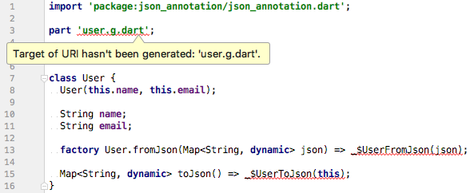

11.7 Json转Dart Model类¶
在实战中，后台接口往往会返回一些结构化数据，如JSON、XML等，如之前我们请求Github API的示例，它返回的数据就是JSON格式的字符串，为了方便我们在代码中操作JSON，我们先将JSON格式的字符串转为Dart对象，这个可以通过dart:convert中内置的JSON解码器json.decode() 来实现，该方法可以根据JSON字符串具体内容将其转为List或Map，这样我们就可以通过他们来查找所需的值，如：
//一个JSON格式的用户列表字符串
String jsonStr='[{"name":"Jack"},{"name":"Rose"}]';
//将JSON字符串转为Dart对象(此处是List)
List items=json.decode(jsonStr);
//输出第一个用户的姓名
print(items[0]["name"]);
通过json.decode() 将JSON字符串转为List/Map的方法比较简单，它没有外部依赖或其它的设置，对于小项目很方便。但当项目变大时，这种手动编写序列化逻辑可能变得难以管理且容易出错，例如有如下JSON:
{
"name": "John Smith",
"email": "john@example.com"
}
我们可以通过调用json.decode方法来解码JSON ，使用JSON字符串作为参数:
Map<String, dynamic> user = json.decode(json);
print('Howdy, ${user['name']}!');
print('We sent the verification link to ${user['email']}.');
由于json.decode()仅返回一个Map<String, dynamic>，这意味着直到运行时我们才知道值的类型。 通过这种方法，我们失去了大部分静态类型语言特性：类型安全、自动补全和最重要的编译时异常。这样一来，我们的代码可能会变得非常容易出错。例如，当我们访问name或email字段时，我们输入的很快，导致字段名打错了。但由于这个JSON在map结构中，所以编译器不知道这个错误的字段名，所以编译时不会报错。
其实，这个问题在很多平台上都会遇到，而也早就有了好的解决方法即“Json Model化”，具体做法就是，通过预定义一些与Json结构对应的Model类，然后在请求到数据后再动态根据数据创建出Model类的实例。这样一来，在开发阶段我们使用的是Model类的实例，而不再是Map/List，这样访问内部属性时就不会发生拼写错误。例如，我们可以通过引入一个简单的模型类(Model class)来解决前面提到的问题，我们称之为User。在User类内部，我们有：
一个
User.fromJson构造函数, 用于从一个map构造出一个User实例 map structure一个
toJson方法, 将User实例转化为一个map.
这样，调用代码现在可以具有类型安全、自动补全字段（name和email）以及编译时异常。如果我们将拼写错误字段视为int类型而不是String， 那么我们的代码就不会通过编译，而不是在运行时崩溃。
user.dart
class User {
final String name;
final String email;
User(this.name, this.email);
User.fromJson(Map<String, dynamic> json)
: name = json['name'],
email = json['email'];
Map<String, dynamic> toJson() =>
<String, dynamic>{
'name': name,
'email': email,
};
}
现在，序列化逻辑移到了模型本身内部。采用这种新方法，我们可以非常容易地反序列化user.
Map userMap = json.decode(json);
var user = new User.fromJson(userMap);
print('Howdy, ${user.name}!');
print('We sent the verification link to ${user.email}.');
要序列化一个user，我们只是将该User对象传递给该json.encode方法。我们不需要手动调用toJson这个方法，因为`JSON.encode内部会自动调用。
String json = json.encode(user);
这样，调用代码就不用担心JSON序列化了，但是，Model类还是必须的。在实践中，User.fromJson和User.toJson方法都需要单元测试到位，以验证正确的行为。
另外，实际场景中，JSON对象很少会这么简单，嵌套的JSON对象并不罕见，如果有什么能为我们自动处理JSON序列化，那将会非常好。幸运的是，有！
自动生成Model¶
尽管还有其他库可用，但在本书中，我们介绍一下官方推荐的json_serializable package包。 它是一个自动化的源代码生成器，可以在开发阶段为我们生成JSON序列化模板，这样一来，由于序列化代码不再由我们手写和维护，我们将运行时产生JSON序列化异常的风险降至最低。
在项目中设置json_serializable¶
要包含json_serializable到我们的项目中，我们需要一个常规和两个开发依赖项。简而言之，开发依赖项是不包含在我们的应用程序源代码中的依赖项，它是开发过程中的一些辅助工具、脚本，和node中的开发依赖项相似。
pubspec.yaml
dependencies:
# Your other regular dependencies here
json_annotation: ^2.0.0
dev_dependencies:
# Your other dev_dependencies here
build_runner: ^1.0.0
json_serializable: ^2.0.0
在您的项目根文件夹中运行 flutter packages get (或者在编辑器中点击 “Packages Get”) 以在项目中使用这些新的依赖项.
以json_serializable的方式创建model类¶
让我们看看如何将我们的User类转换为一个json_serializable。为了简单起见，我们使用前面示例中的简化JSON model。
user.dart
import 'package:json_annotation/json_annotation.dart';
// user.g.dart 将在我们运行生成命令后自动生成
part 'user.g.dart';
///这个标注是告诉生成器，这个类是需要生成Model类的
@JsonSerializable()
class User{
User(this.name, this.email);
String name;
String email;
//不同的类使用不同的mixin即可
factory User.fromJson(Map<String, dynamic> json) => _$UserFromJson(json);
Map<String, dynamic> toJson() => _$UserToJson(this);
}
有了上面的设置，源码生成器将生成用于序列化name和email字段的JSON代码。
如果需要，自定义命名策略也很容易。例如，如果我们正在使用的API返回带有_snake_case_的对象，但我们想在我们的模型中使用_lowerCamelCase_， 那么我们可以使用@JsonKey标注：
//显式关联JSON字段名与Model属性的对应关系
@JsonKey(name: 'registration_date_millis')
final int registrationDateMillis;
运行代码生成程序¶
json_serializable第一次创建类时，您会看到与图11-4类似的错误。

这些错误是完全正常的，这是因为Model类的生成代码还不存在。为了解决这个问题，我们必须运行代码生成器来为我们生成序列化模板。有两种运行代码生成器的方法：
一次性生成¶
通过在我们的项目根目录下运行:
flutter packages pub run build_runner build
这触发了一次性构建，我们可以在需要时为我们的Model生成json序列化代码，它通过我们的源文件，找出需要生成Model类的源文件（包含@JsonSerializable标注的）来生成对应的.g.dart文件。一个好的建议是将所有Model类放在一个单独的目录下，然后在该目录下执行命令。
虽然这非常方便，但如果我们不需要每次在Model类中进行更改时都要手动运行构建命令的话会更好。
持续生成¶
使用_watcher_可以使我们的源代码生成的过程更加方便。它会监视我们项目中文件的变化，并在需要时自动构建必要的文件，我们可以通过flutter packages pub run build_runner watch在项目根目录下运行来启动_watcher_。只需启动一次观察器，然后它就会在后台运行，这是安全的。
自动化生成模板¶
上面的方法有一个最大的问题就是要为每一个json写模板，这是比较枯燥的。如果有一个工具可以直接根据JSON文本生成模板，那我们就能彻底解放双手了。笔者自己用dart实现了一个脚本，它可以自动生成模板，并直接将JSON转为Model类，下面我们看看怎么做：
定义一个”模板的模板”，名为”template.dart”：
import 'package:json_annotation/json_annotation.dart'; %t part '%s.g.dart'; @JsonSerializable() class %s { %s(); %s factory %s.fromJson(Map<String,dynamic> json) => _$%sFromJson(json); Map<String, dynamic> toJson() => _$%sToJson(this); }模板中的“%t”、“%s”为占位符，将在脚本运行时动态被替换为合适的导入头和类名。
写一个自动生成模板的脚本(mo.dart)，它可以根据指定的JSON目录，遍历生成模板，在生成时我们定义一些规则：
如果JSON文件名以下划线“_”开始，则忽略此JSON文件。
复杂的JSON对象往往会出现嵌套，我们可以通过一个特殊标志来手动指定嵌套的对象（后面举例）。
脚本我们通过Dart来写，源码如下：
import 'dart:convert'; import 'dart:io'; import 'package:path/path.dart' as path; const TAG="\$"; const SRC="./json"; //JSON 目录 const DIST="lib/models/"; //输出model目录 void walk() { //遍历JSON目录生成模板 var src = new Directory(SRC); var list = src.listSync(); var template=new File("./template.dart").readAsStringSync(); File file; list.forEach((f) { if (FileSystemEntity.isFileSync(f.path)) { file = new File(f.path); var paths=path.basename(f.path).split("."); String name=paths.first; if(paths.last.toLowerCase()!="json"||name.startsWith("_")) return ; if(name.startsWith("_")) return; //下面生成模板 var map = json.decode(file.readAsStringSync()); //为了避免重复导入相同的包，我们用Set来保存生成的import语句。 var set= new Set<String>(); StringBuffer attrs= new StringBuffer(); (map as Map<String, dynamic>).forEach((key, v) { if(key.startsWith("_")) return ; attrs.write(getType(v,set,name)); attrs.write(" "); attrs.write(key); attrs.writeln(";"); attrs.write(" "); }); String className=name[0].toUpperCase()+name.substring(1); var dist=format(template,[name,className,className,attrs.toString(), className,className,className]); var _import=set.join(";\r\n"); _import+=_import.isEmpty?"":";"; dist=dist.replaceFirst("%t",_import ); //将生成的模板输出 new File("$DIST$name.dart").writeAsStringSync(dist); } }); } String changeFirstChar(String str, [bool upper=true] ){ return (upper?str[0].toUpperCase():str[0].toLowerCase())+str.substring(1); } //将JSON类型转为对应的dart类型 String getType(v,Set<String> set,String current){ current=current.toLowerCase(); if(v is bool){ return "bool"; }else if(v is num){ return "num"; }else if(v is Map){ return "Map<String,dynamic>"; }else if(v is List){ return "List"; }else if(v is String){ //处理特殊标志 if(v.startsWith("$TAG[]")){ var className=changeFirstChar(v.substring(3),false); if(className.toLowerCase()!=current) { set.add('import "$className.dart"'); } return "List<${changeFirstChar(className)}>"; }else if(v.startsWith(TAG)){ var fileName=changeFirstChar(v.substring(1),false); if(fileName.toLowerCase()!=current) { set.add('import "$fileName.dart"'); } return changeFirstChar(fileName); } return "String"; }else{ return "String"; } } //替换模板占位符 String format(String fmt, List<Object> params) { int matchIndex = 0; String replace(Match m) { if (matchIndex < params.length) { switch (m[0]) { case "%s": return params[matchIndex++].toString(); } } else { throw new Exception("Missing parameter for string format"); } throw new Exception("Invalid format string: " + m[0].toString()); } return fmt.replaceAllMapped("%s", replace); } void main(){ walk(); }
写一个shell(mo.sh)，将生成模板和生成model串起来：
dart mo.dart flutter packages pub run build_runner build --delete-conflicting-outputs
至此，我们的脚本写好了，我们在根目录下新建一个json目录，然后把user.json移进去，然后在lib目录下创建一个models目录，用于保存最终生成的Model类。现在我们只需要一句命令即可生成Model类了:
./mo.sh
运行后，一切都将自动执行，现在好多了，不是吗？
嵌套JSON¶
我们定义一个person.json内容修改为：
{
"name": "John Smith",
"email": "john@example.com",
"mother":{
"name": "Alice",
"email":"alice@example.com"
},
"friends":[
{
"name": "Jack",
"email":"Jack@example.com"
},
{
"name": "Nancy",
"email":"Nancy@example.com"
}
]
}
每个Person都有name 、email 、 mother和friends四个字段，由于mother也是一个Person，朋友是多个Person(数组)，所以我们期望生成的Model是下面这样：
import 'package:json_annotation/json_annotation.dart';
part 'person.g.dart';
@JsonSerializable()
class Person {
Person();
String name;
String email;
Person mother;
List<Person> friends;
factory Person.fromJson(Map<String,dynamic> json) => _$PersonFromJson(json);
Map<String, dynamic> toJson() => _$PersonToJson(this);
}
这时，我们只需要简单修改一下JSON，添加一些特殊标志，重新运行mo.sh即可：
{
"name": "John Smith",
"email": "john@example.com",
"mother":"$person",
"friends":"$[]person"
}
我们使用美元符“$”作为特殊标志符(如果与内容冲突，可以修改mo.dart中的TAG常量，自定义标志符)，脚本在遇到特殊标志符后会先把相应字段转为相应的对象或对象数组，对象数组需要在标志符后面添加数组符“[]”，符号后面接具体的类型名，此例中是person。其它类型同理，加入我们给User添加一个Person类型的 boss字段：
{
"name": "John Smith",
"email": "john@example.com",
"boss":"$person"
}
重新运行mo.sh，生成的user.dart如下：
import 'package:json_annotation/json_annotation.dart';
import "person.dart";
part 'user.g.dart';
@JsonSerializable()
class User {
User();
String name;
String email;
Person boss;
factory User.fromJson(Map<String,dynamic> json) => _$UserFromJson(json);
Map<String, dynamic> toJson() => _$UserToJson(this);
}
可以看到，boss字段已自动添加，并自动导入了“person.dart”。
Json_model 包¶
如果每个项目都要构建一个上面这样的脚本显然很麻烦，为此，我们将上面脚本和生成模板封装了一个包,已经发布到了Pub上，包名为Json_model，开发者把该包加入开发依赖后，便可以用一条命令，根据Json文件生成Dart类。另外Json_model 处于迭代中，功能会逐渐完善，所以建议读者直接使用该包（而不是手动复制上面的代码）。
使用IDE插件生成model¶
目前Android Studio(或IntelliJ)有几个插件，可以将json文件转成Model类，但插件质量参差不齐，甚至还有一些沾染上了抄袭风波，故笔者在此不做优先推荐，读者有兴趣可以自行了解。但是，我们还是要了解一下IDE插件和Json_model的优劣：
Json_model需要单独维护一个存放Json文件的文件夹，如果有改动，只需修改Json文件便可重新生成Model类；而IDE插件一般需要用户手动将Json内容拷贝复制到一个输入框中，这样生成之后Json文件没有存档的化，之后要改动就需要手动。
Json_model可以手动指定某个字段引用的其它Model类，可以避免生成重复的类；而IDE插件一般会为每一个Json文件中所有嵌套对象都单独生成一个Model类，即使这些嵌套对象可能在其它Model类中已经生成过。
Json_model 提供了命令行转化方式，可以方便集成到CI等非UI环境的场景。
FAQ¶
很多人可能会问Flutter中有没有像Java开发中的Gson/Jackson一样的Json序列化类库？答案是没有！因为这样的库需要使用运行时反射，这在Flutter中是禁用的。运行时反射会干扰Dart的_tree shaking_，使用_tree shaking_，可以在release版中“去除”未使用的代码，这可以显著优化应用程序的大小。由于反射会默认应用到所有代码，因此_tree shaking_会很难工作，因为在启用反射时很难知道哪些代码未被使用，因此冗余代码很难剥离，所以Flutter中禁用了Dart的反射功能，而正因如此也就无法实现动态转化Model的功能。